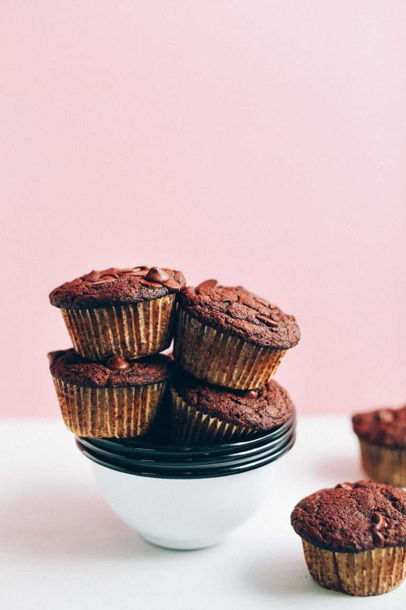
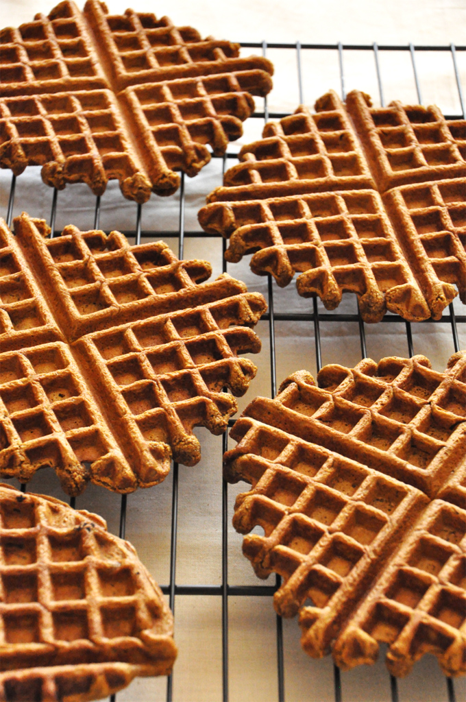

Veganism is a total refusal to subject animals to suffering and to enslave them for our use as if they were mere objects, depriving them of freedom, torturing or killing them.
Thanks to the ease of finding information today, many people decide to lead a life without collaborating in the exploitation of animals.
The vegan people, besides following a strict vegetarian diet (without eggs and dairy products, unlike the ovo-lacteo-vegetarian), we also refuse to use animals as clothing (skins, leather, wool, silk ..), and today
there are alternative materials of very good quality.
We are also opposed to shows in which animals are used, such as circuses with animals, zoos, aquariums ... and to using products tested on animals as far as possible, such as cosmetics, cleaning products...
And each of these decisions has a good reason behind it.
Vegan recipes
Bowl chocolate chocolate chip muffins

Tender, fluffy, vegan chocolate chocolate chip muffins made with in 1 bowl! Naturally sweet, insanely delicious, and so easy to make.
Ingredients
- 2 batches flax egg (2 Tbsp (14 g) flaxseed meal + 5 Tbsp (75 ml) water as original recipe is written)
- 3/4 cup applesauce
- 1/4 cup maple syrup
- 1/3 cup coconut sugar
- 1 1/2 tsp baking soda
- 1 tsp baking powder
- 1/4 tsp sea salt
- 1/4 cup melted coconut oil (or sub another neutral oil)
- 1/4 cup unsweetened almond milk
- 1/2 cup unsweetened cocoa powder
- 3/4 cup gluten-free flour blend
- 1/4 cup gluten-free oat flour (finely ground rolled oats)
- 1/3 cup almond flour (or almond meal, though I haven't tested it this way)
- 1/3 cup dairy-free semisweet chocolate chips (plus more for topping)
Instructions
- Preheat oven to 375 degrees F (190 C) and line 9-10 muffins (amount as original recipe is written // adjust if altering batch size) with paper liners (I prefer these, as they don’t stick to the muffins).
- Prepare flax eggs in a large mixing bowl and let rest for 5 minutes.
- Add applesauce, maple syrup, coconut sugar, baking soda, baking powder, and sea salt and whisk again. Then stir in the melted coconut oil and almond milk and whisk to combine.
- Add cocoa powder, gluten-free flour, oat flour, and almond flour and whisk until just combined. If the batter appears too thick, add a touch more almond milk. But it should be quite thick and NOT pourable – rather scoopable.
- Lastly, stir in chocolate chips. Then divide batter evenly between muffin tins, filling all the way full (should be enough for 9-10 // amount as original recipe is written // adjust if altering batch size), and top with a few more chocolate
chips (optional).
- Bake for 22-28 minutes or until a toothpick inserted into the center comes out clean and the edges appear dry. Let cool for 5 minutes in the pan. Then remove from tins and let cool on a cooling rack. Texture is best when cooled completely.
- Will keep covered at room temperature for 3-4 days or in the freezer for up to 1 month.
Gingerbread waffles

10-ingredient vegan waffles with all the flavor of a ginger cookie and the tenderness of a morning waffle.
Ingredients
- 1 1/4 cup whole-wheat pastry flour*
- 1/2 Tbsp baking powder
- 1/3 scant cup brown sugar
- 1 tsp cinnamon
- 1 tsp ginger
- 1/4 cup pumpkin puree
- 1 batch flax egg (1 Tbsp (7 g) flaxseed meal + 2 ½ Tbsp (37 ml) water as original recipe is written)
- 1 scant cup unsweetened almond milk
- 2 Tbsp molasses
- 1 Tbsp avocado oil
Instructions
- Preheat waffle iron. Prepare flax egg by combining water and flaxseed in a large bowl and letting rest for 5 minutes.
- Add molasses, pumpkin puree, oil, brown sugar and whisk. Add almond milk and stir once more.
- Add flour, baking powder and spices to a sifter and sift over wet ingredients. Stir until just combined. Ideally, let batter rest for 5 minutes before cooking.
- Once preheated, generously spray the waffle iron with non-stick cooking spray and spoon about 1/2 cup of the batter onto the center of the iron and cook according to your machine's instructions. I like to set mine to the darkest setting
so it gets extra crispy.
- Once done, remove and place on cooling rack to let steam roll of and crisp up a bit. Serve warm with vegan butter (such as Earth Balance) and maple syrup, or whatever toppings you desire.